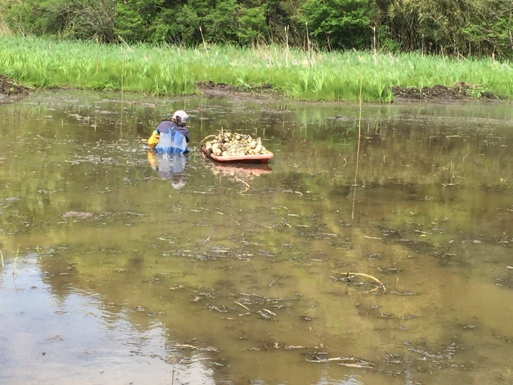
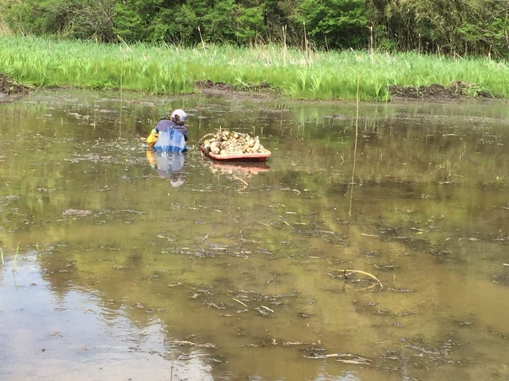
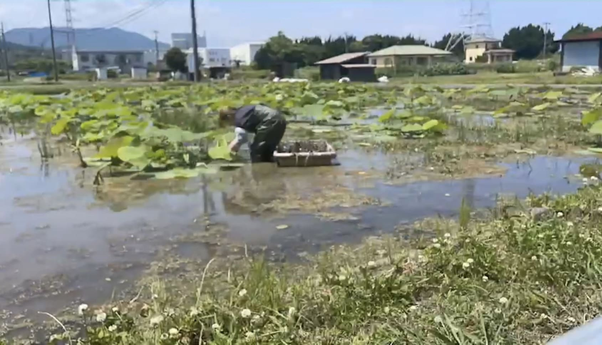
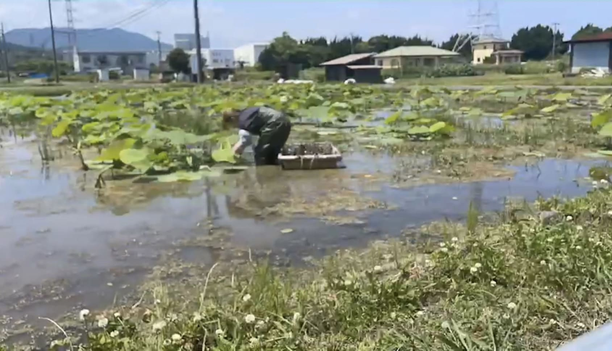
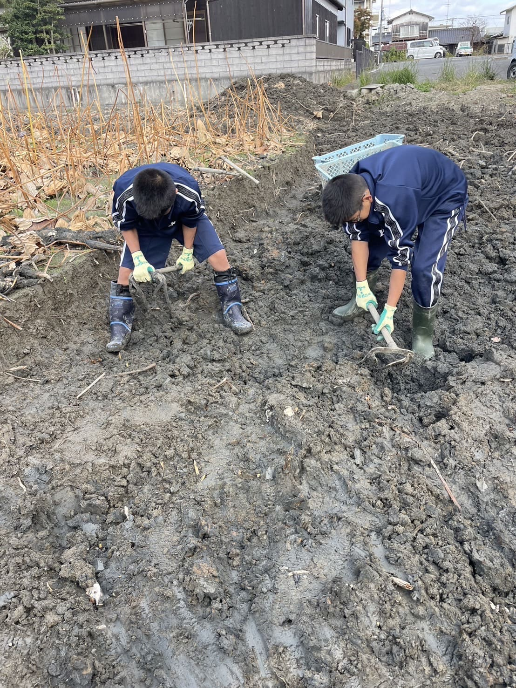

Here's the translation: "Spread fertilizer on the soil and use a hoe to soften and level the soil. This makes it easier to plant lotus root seeds and ensures uniform watering.
The planting is done manually.
 

Water management
After planting, water management is important. If the plants suffer from water shortage, their growth may be hindered, and weeds may grow more easily. Moreover, high water temperatures can easily induce rot diseases. Therefore, during the summer, it's advisable to flush water or take measures to lower the water temperature as much as possible.
Weeding
If algae or weeds start to grow, they can entangle the new shoots of lotus roots, hindering their growth and potentially leading to pest infestation. Therefore, they should be removed by hand.

 

Harvesting lotus roots requires heavy labor and skilled techniques.
In the summer, we perform a method called "suibori," where the lotus roots are harvested while the water is still present. In suibori, we use a water pressure hose to dig out the lotus roots.
In winter, we harvest by draining the water and using a tool called "kuwabori."
For "kuwabori," we first drain the water and then use a specialized machine to remove the top layer of soil, about 15 to 30 cm deep. We harvest the lotus roots manually while digging through the soil.
Compared to "mizubori," "kuwabori" takes more time due to the manual digging process. However, the advantage is that we can harvest fresh lotus roots with mud attached to them, which preserves their freshness.
